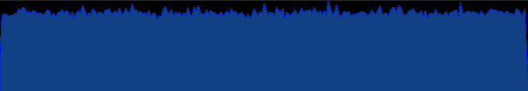

.
.
I use this function in a few of the shaders on this website. My favourite is Rain, but Shader Noise is useful to see what the function actually produces.
To start, I made some assumptions while developing this noise algorithm that turned out to be wrong. The two main points are that
I assumed the floatBitsToInt function would just reinterpret the bits as an integer, which would be a
fast operation. What actually happens is the float first gets expanded from 16 bits to 32 bits, then
the bits get reinterpreted. This is slower than I expected, I'm just not sure how much slower since I
haven't actually run any benchmarks. Details are on
page 91 of the GLSL ES specification.
I also assumed that integer operations would be faster than floating point operations. However, this was
kind of foolish since GPUs are pretty much made for floating point operations. In fact Nvidia GPUs have
more cores for processing floating point operations than integer operations, at least if I interpreted
this video correctly.
Oops.
Anyway, this method still works, and would be fine on a CPU. And like I said, I didn't actually do any benchmarks, so it might not even be slower, but it probably is.
I'm not going to go deep into how floating point numbers work, here's a brief summary for a 32 bit float:
Our goal is to get unpredictable numbers in the range of [0,1). So we'll set the sign to 0. For the exponent we can also use 0, which means we need to actually set the bits to 127. We can then fill the mantissa with random bits to get numbers in the range [1, 2). Remapping to our desired range is as simple as subtracting 1.
To get our random bits, we will take a vec3 as our seed and hash it. First we need to get the bits into an integer so we can do some
bit manipulation on them. Luckily there's a function in GLSL for that called floatBitsToInt (there is a reverse as well).
I won't pretend to be an expert on hashing functions. I just saw what Paul Hsieh was doing
in his final avalanche step and mimicked it. My naive understanding of what's happening is we shift our bits down for the additions so that
the changes cascade up through the carry bits and since we would be more likely to lose information from the carry overflowing if we shifted up.
Then we shift up for the XORs to make sure the lower bits have enough of an effect on the upper bits. We need to shift by a variety of distances
to make sure the bits get thoroughly mixed up. We're not going for anything cryptographically secure here, it just needs to look
random enough to pass visual inspection.
Now that we have our bits, we can do a bitwise AND on them and a mask of the lower 23 bits to get our mantissa. In hex, this would be 0x007FFFFF. Then we do a bitwise OR to set our desired sign and exponent. Again in hex, we use 0x3F800000. We then convert our bits back into a float, and subtract 1 to get our final value.
In the end, we get 23 bits of randomness, which is pretty good for greyscale. For colour, we are one bit off of the 24 bits used for RGB.
Our final functions looks like this:
// This exponent in a float gives numbers in the range of [1.0, 2.0)
#define EXPONENT 0x3F800000
// Mask of the mantissa of a float
#define MASK 0x007FFFFF
ivec3 hash(ivec3 h)
{
// This initial XOR is to make sure there is a
// variety of bits to start with
int a = h.x ^ 0x0fe382ac;
int b = h.y ^ 0x7862c765;
int c = h.z ^ 0xe63cf826;
a ^= a << 3;
a += a >> 5;
a ^= a << 7;
a += a >> 11;
a ^= a << 13;
a += a >> 17;
a ^= a << 5;
b ^= a;
b += b >> 2;
b ^= b << 4;
b += b >> 6;
b ^= b << 12;
b += b >> 20;
b ^= b << 13;
b += b >> 5;
b ^= b << 9;
c ^= b;
c += c >> 1;
c ^= c << 3;
c += c >> 8;
c ^= c << 14;
c += c >> 23;
c ^= c << 11;
c += c >> 6;
c ^= c << 2;
return ivec3(a,b,c);
}
float noise(vec3 seed)
{
ivec3 h = hash(floatBitsToInt(seed));
float result = intBitsToFloat((MASK & (h.x ^ h.y ^ h.z)) | EXPONENT);
return result-1.0;
}
If we use the pixel coordinate as the seed, we get an image like this:

Loading this image into some image editing software, we can see the histogram:
Which has a reasonably even distribution. Even enough for some shader art at least.